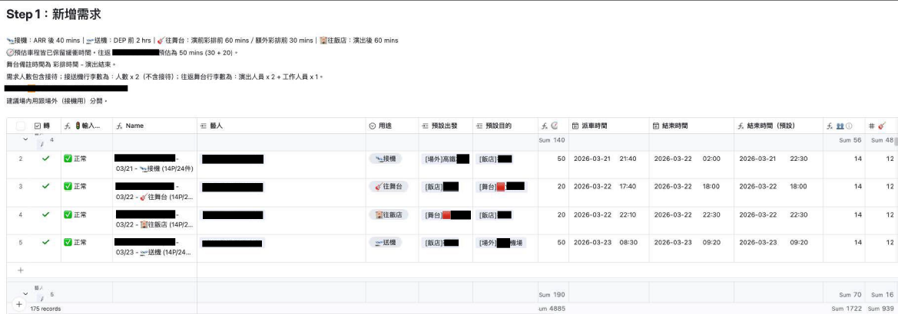
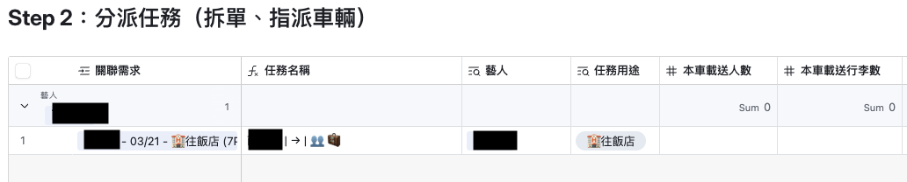
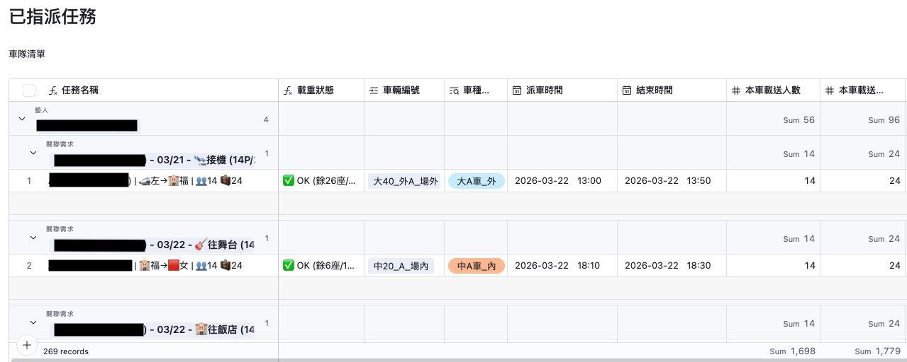
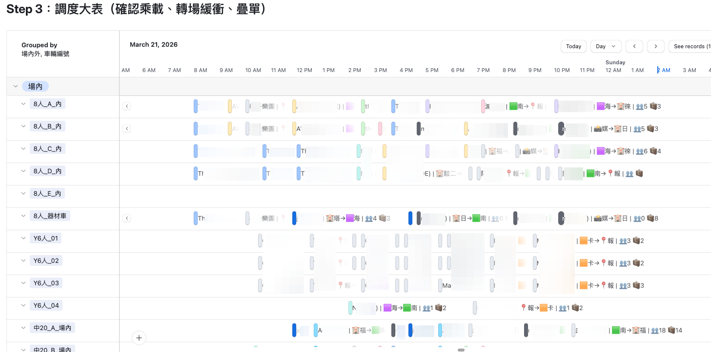
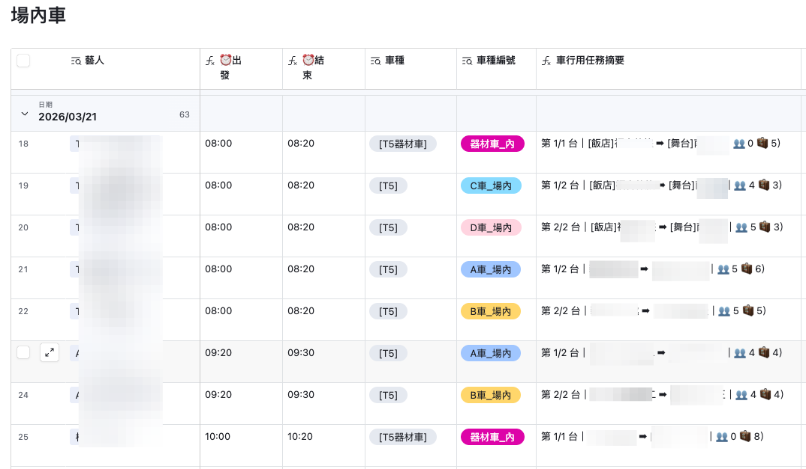
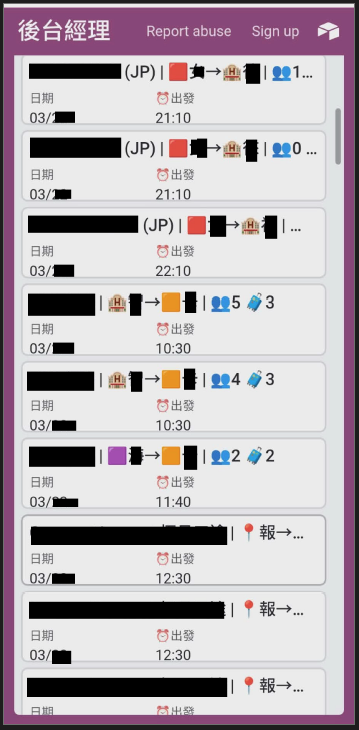

系統設計 / 活動行政
Pain 01
藝人需求、車輛配置與行程動線缺乏關聯，修改一處需手動同步多處，效率不高且容易出錯。
Pain 02
單一需求拆分為多台車輛（如 T5 + 大巴）時，調度員需手動記錄分派順序，在百筆任務中造成巨大負荷。
Pain 03
缺乏時空視圖，無法直觀判斷車輛在結束上一趟後是否能銜接下一趟任務，難以最大化車輛利用率。
系統設計亮點
拆解「需求、任務、車輛、地點、藝人」五大維度，建立網狀資料架構。所有新增與變動統一由單一窗口輸入，透過既定工作流逐步分派車趟，確保全場不同單位在毫秒內同步——資料輸入一次，全場動態聯動。
針對節目統籌、派車組、後台經理、車行等不同單位設計專屬介面，依角色篩選資料深度與權限。透過 Timeline 視圖直觀判斷車趟銜接與衝突，大幅提升現場應變效率。
人機協作
在面對 Airtable 複雜的字串計算（LEN/SUBSTITUTE）與資料型態轉換挑戰時，採取精準提問策略——不要求 AI 直接給答案，而是一同辯證資料架構，要求 AI 解釋底層編碼原則。我負責定義業務場景與標準參數，AI 負責實現語法細節。「我是架構師，AI 是我的首席工程師。」
系統介面
Step 01
新增需求
所有新增的需求、新增的變動，都統一由此建立任務。

Step 02
分派任務
評估需求，決定需要拆成幾台車、哪種車型來完成，系統自動生成分派序號。


Step 03
調度大表
車輛調度主要由大表來快速判斷，可從調度大表快速調整車種、派車時間，Timeline 視圖即時顯示車趟銜接。

角色化視圖
不同單位的專屬畫面
依照各單位的工作需求，提供不同的資料深度與篩選視角。

行動裝置
手機版檢視
現場工作人員可透過手機即時查看自己負責的車趟資訊。
